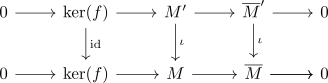
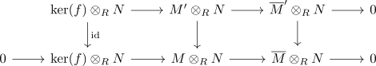
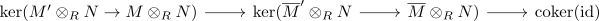
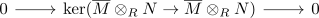

quotient-flatness of an M-flat module
Proposition
Let \(R\) be a commutative ring and $\mathrm{RMod}$ the category RMod Suppose $N$ is M-flat, $\overline{M} = M/ \widehat{M}$ a quotient module for a submodule $\widehat{M} \subseteq M$. Then $N$ is $\widehat{M}$ flat
Proof
Consider the projection
which can be exactified to
Let $\iota: \overline{M}' \rightarrow \overline{M}$ be a monomorphism. then $\overline{M}' \subseteqov \overline{M}$ can be regarded as submodule.
Define $M' \subseteq M$ by $M' \coloneqq p^{-1}[\overline{M}']$. Since $0 \in \overline{M}'$ it follows that $\mathrm{ker}(\pi) = p^{-1}[ \{0\}] \subseteq p^{-1}[\overline{M}']$
therefore there exists a diagram

where $\mathrm{ker}(f) \hookrightarrow M' \hookrightarrow M$ are the inclusions.
Then the upper row is also exact, as
applying the tensoring functor results in the diagram

where the right part is exact as the tensor functor is right exact and the bottom left is exact by assumption of $N$ being $M$ flat. Furthermore the map $M' \otimes_R N \rightarrow M \otimes_R N$ is injective.
therefore we may use the Snake lemma for modules giving us an exact sequence

since $\mathrm{id}$ is an module-epimorphism and $M \otimes_R N \rightarrow M \otimes_R N)$ is injective this gives the exact sequence

therefore by exactly sandwhiched by isomorphisms and zero object we conclude that
showing that the map $\overline{M} \otimes_R N \rightarrow \overline{M} \otimes_R N$ is a monomorphism.
thus $N$ is also \(\overline{M}\)-flat